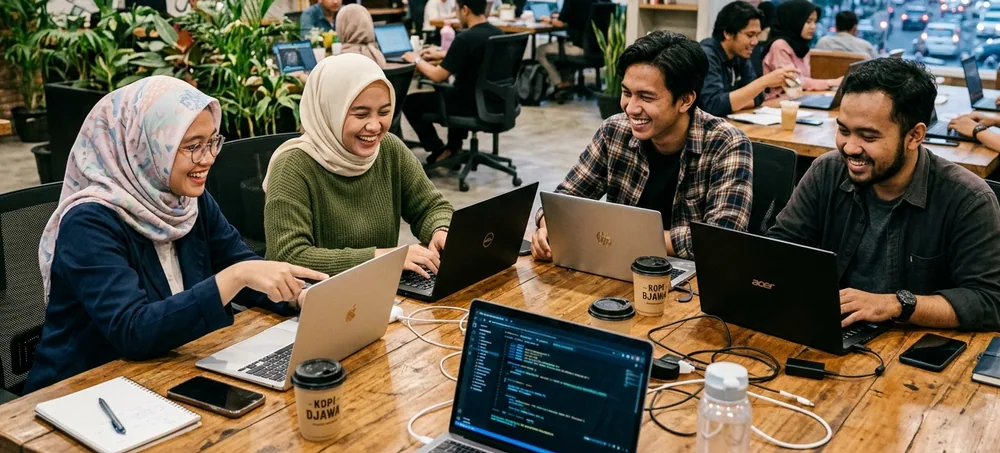

Manajemen Toko Online
Pengelolaan katalog produk, strategi penataan deskripsi, penentuan harga, dan operasional marketplace.
Mengembangkan kemampuan mengelola toko online, riset pasar digital, analisis performa penjualan, dan strategi e-commerce modern.
Jurusan Bisnis Digital mempersiapkan peserta untuk menguasai lanskap perdagangan digital modern. Melalui program ini, peserta akan belajar bagaimana mengelola toko online di marketplace, menyusun strategi produk, berkomunikasi dengan pelanggan, serta menganalisis performa toko secara real-time.
Program magang ini dirancang agar peserta tidak hanya menguasai teori dasar, tetapi juga terbiasa menggunakan alur kerja standar industri. Setiap tugas yang diberikan mengacu pada studi kasus riil yang berguna untuk mengasah kesiapan kerja.

Empat pilar kompetensi utama yang akan ditempuh peserta selama kegiatan magang.
Pengelolaan katalog produk, strategi penataan deskripsi, penentuan harga, dan operasional marketplace.
Menganalisis tren pasar digital, identifikasi target audiens, dan riset harga kompetitor.
Menulis judul dan deskripsi produk yang persuasif, informatif, dan mengoptimalkan hasil pencarian.
Mengukur data transaksi, konversi pengunjung, serta evaluasi layanan pelanggan yang responsif.
Peserta akan menggunakan perangkat lunak standar industri berikut selama pengerjaan proyek:
Pengalaman dan portofolio dari jurusan ini dapat membuka peluang karir sebagai:
Daftar magang sekarang untuk mendapatkan pengalaman kerja nyata dan membangun portofolio impianmu.